Odin foundations¶
Part I · The language
1. Prepare your workshop¶
Before learning a language, we need a way to tell whether our understanding is wrong. A working compiler is only the beginning: we also need to know which compiler it is, which libraries it ships, and how to repeat an experiment. Otherwise a change in the tools can look like a change in our program.
This edition follows Odin's official monthly dev-2026-10 release (reported by odin version as dev-2026-10-nightly:84bc3fc). This pins a released compiler build, not a semver-stable language ABI. If your version differs, first run the small example unchanged; investigate a difference before layering more code on top. Record these two pieces of evidence:
odin version
odin help
Keep each lesson in its own directory. An Odin package is the set of source files in a directory that declare the same package name; the compiler normally compiles those files together. A directory is not merely a place to store unrelated files—it is one compilation unit and a useful boundary for tests and ownership.
mkdir -p ~/learn/odin/01-hello
cd ~/learn/odin/01-hello
$EDITOR main.odin
Use the editor you know. Later Linux labs also use ordinary command-line tools; the FFmpeg chapters require ffmpeg, ffprobe, and development libraries. Keep generated executables outside source directories or ignore them deliberately.
Build loop and evidence¶
odin check .
odin run . -debug
odin test .
odin build . -out:./build/tool
Checking, running, testing, and building answer different questions. The -debug switch requests debug information; setting an environment variable named ODIN_DEBUG is not a substitute. Create build/ before choosing an output inside it. A successful check establishes that this compiler accepts the selected package, not that it can find every shared library at deployment time.
The source is already in your workshop¶
odin root
odin version
# Open these paths below the directory printed by odin root:
# base/runtime/core.odin
# core/os/file_util.odin
# core/testing/testing.odin
The compiler distribution includes its runtime and library source. We will use that copy rather than assuming the current GitHub branch matches our installation. In runtime/core.odin, find Context and Allocator. You do not need to understand them yet. Their presence tells us something valuable: allocation policy is represented as ordinary data and procedures, not concealed behind a completely separate library mechanism.
Keep three labels in mind as you read: language rule, API contract, and implementation observation. A loop’s syntax is a language rule. A procedure’s documented return values form an API contract. The buffer size chosen inside that procedure is an implementation observation. Source makes the third visible, but does not turn it into a permanent promise.
Checkpoint. odin version prints a version and exits successfully. If not, solve the installation or PATH issue before debugging Odin code.
Chapter 2 · Compilation model
2. Packages, compilation, and targets¶
Write this into main.odin:
package main
import "core:fmt"
main :: proc() {
fmt.println("Hello, Odin")
}
Run it from its directory:
odin run .
The greeting hides a useful question: how did the operating system find an Odin procedure with no arguments? Linux starts an executable through its platform entry mechanism, not by looking for this particular source declaration. Odin supplies the bridge. Our main is the application entry point; the runtime has work to do before it calls us.
Following the entry path¶
Read base/runtime/entry_unix.odin. In the ordinary non-test, CRT-enabled executable branch, a C-convention main receives argc and argv. It stores the argument slice, creates the default context, calls runtime startup, invokes the compiler’s application entry-point intrinsic, then runs runtime cleanup before returning zero. Tests, dynamic libraries, and no-CRT builds select different branches.
That sequence explains why our procedure can use context without constructing it and why the process arguments exist before our first statement. It also explains why a test build is not simply a normal executable that happens to call some extra procedures. Its entry path is selected separately.
The package line associates a source file with a package. Files in the same package directory can refer to each other without headers or forward declarations. Try moving the greeting text into a second file with the same package declaration. Nothing about the call needs to change. Moving that file into a subdirectory, however, creates a separate package boundary rather than continuing the original one. Imports refer to packages, not individual source files.
One boundary remains file-local: an import name is not automatically available in every other file of the package. A test file using os.pipe needs its own core:os import even if the production file already imports it. Package declarations share definitions; files still declare the import names they use. Deliberately remove that import from a small test file and inspect the diagnostic.
The core: prefix selects a library collection; it is not a network package download. Here :: binds the procedure as a compile-time entity. Splitting the source can improve navigation, but does not create the isolation that a separate package provides.
Grow a CLI without growing one file¶
An Odin package is a directory, not a project-wide module assembled from arbitrary source paths. The compiler compiles the .odin files in the selected directory together when they declare the same package. Start with a few focused files in one directory—such as main.odin, args.odin, and output.odin—when they implement one cohesive command and share internal declarations. This improves navigation without adding an import boundary.
Create a subdirectory package when a piece of the program has a clear responsibility, can be named and tested independently, or should expose a small API while hiding implementation. Import its package by path; the imported source is compiled as a separate package. Do not split every file into a package: extra boundaries mean explicit imports and an API to maintain. Keep command parsing, orchestration, and CLI-specific errors near the entry point; move reusable domain operations out only when that separation pays for itself.
Odin declarations are public by default. That includes procedures, types, constants, variables, and other declarations; use an explicit visibility attribute to narrow access. This is a visibility fragment; procedure bodies are placeholders:
// In package `labels`: callers in other packages can use this procedure.
greeting :: proc(name: string) -> string { /* implementation */ }
// Other files in `labels` can use this helper; importers cannot.
@(private="package")
normalize_name :: proc(name: string) -> string { /* implementation */ }
// Only this source file can refer to this declaration.
@(private="file")
PREFIX :: "Hello, "
@(private="package") is useful for package-internal helpers shared by multiple files. @(private="file") keeps a declaration local to its source file. There is no protected inheritance visibility: Odin does not use class inheritance as a package organization mechanism. This is compile-time access control, not a security boundary.
Keep imports explicit in each file that uses them. A package line identifies the package; it does not import sibling or standard-library packages. The built-in collections have paths such as core:fmt; local package imports use a package path relative to the importing package (see ../label in the example). A test file also declares its own imports. The complete multi-file CLI example demonstrates the boundary, public API, hidden implementation, output ownership, and a focused test.
Odin has no official package manager that resolves and pins third-party dependencies for you. For a small tool, prefer the standard library or a dependency already present in the project's controlled source tree. If you vendor third-party Odin source, record its upstream URL, exact release or commit, license, and local changes; keep the import path stable and update it deliberately. Do not depend on a moving branch, unrecorded machine-local checkout, or a downloaded dependency whose version cannot be reproduced. Review updates and run the compiler and tests against the pinned dependency source.
That greeting is only a toolchain smoke test. For real work, ask which build target and configuration you are producing, which packages are included, and which platform assumptions the code makes. Use odin help build and odin help run for the installed compiler’s flags; do not copy a target or optimization switch from a different compiler release without checking it.
| Command | What it does |
|---|---|
odin check . |
Compile and type-check without running the program. |
odin run . |
Compile the package and run its executable. |
odin build . -out:hello |
Build an executable named hello in the current directory. |
./hello |
Run the built executable directly through Linux. |
Odin also accepts a single source file as a complete package with -file, for example odin run hello.odin -file. That mode is useful for a compact experiment; a directory package is easier to extend and test. Keep source, test fixtures, and build output distinguishable.
Checkpoint. Explain why odin check, odin test, and odin build are different evidence. Then change the greeting and deliberately break an import to inspect a package-level compiler error.
Chapter 3 · Declarations
3. Read Odin: declarations and types¶
Suppose you see count := 3 and limit :: 10. Both names have numbers on the right. Why should the punctuation matter? Because one introduces a runtime variable and the other a compile-time constant. Treating them as two spellings of an immutable variable will lead to surprises when you try to take addresses or index constant aggregates.
count := 3 // inferred, mutable variable
limit :: 10 // constant
name: string = "Ada" // explicitly typed variable
ready: bool // zero value: false
Odin is statically typed: the compiler checks values and calls before execution. Treat a type as part of the contract, not decoration. int is the language’s machine-sized signed integer; it is not a promise of C int. Use fixed-width integers such as u8, u32, and i64 when a file format, protocol, or foreign ABI specifies a width. Common types also include f32, f64, bool, rune, and string.
Strings and bytes are related, but not identical¶
An Odin string is a length-carrying byte sequence, commonly UTF-8 text; it is not inherently NUL-terminated. One visible character may occupy multiple UTF-8 bytes, so a byte count is not a character count and an arbitrary byte offset may split a code point. A C char *, by contrast, is usually terminated by NUL and has no length field. This difference becomes a real ABI concern in the libav chapters.
Fixed and dynamic collections¶
An array has a size that is part of its type; a slice describes a view over elements; a dynamic array owns resizable storage. A map associates keys with values. These choices communicate both shape and storage behavior.
three: [3]int = {2, 4, 8}
view := three[:]
first := view[0]
numbers := make([dynamic]int)
defer delete(numbers)
append(&numbers, 2)
append(&numbers, 4)
A dynamic array with no requested capacity need not allocate immediately. Growth is the first operation that may require backing storage. That distinction matters if you are counting allocations: declaring an empty container and adding an element are not necessarily the same cost.
Read a value’s representation before guessing its lifetime¶
In base/runtime/core.odin, the raw representations give us a compact mental model:
| Value | Representation in this runtime | Consequence of copying it |
|---|---|---|
| String | Byte pointer and length | The bytes are not cloned. |
| Slice | Data pointer and length | The view is copied; backing storage is shared. |
| Dynamic array | Data pointer, length, capacity, allocator | The header is copied; the allocation is not. |
| Fixed array | Its elements are part of the value | Element values are copied, including any pointers those elements contain. |
This is a source-backed description of this implementation, not permission to serialize its headers. A pointer and length do not say whether a value is an owner. A slice can refer to a local array, heap allocation, mapped file, or another container’s storage. The caller must know which lifetime applies.
// Fragment inside a procedure: predict a[0] before running.
a := [3]int{2, 4, 8}
b := a
b[0] = 99
view := a[:]
view[0] = 7
// a[0] is 7; b[0] is 99.
The array copy separated the element storage. The slice did not. Now replace int with a record containing a pointer: copying the array copies the pointer values, not their targets. “Value copy” is not a synonym for “recursive clone.”
Length is measured in the value’s units¶
len("é") is two UTF-8 bytes, not one visible character. Iterating a string yields runes and byte offsets; combining marks can make even a rune count differ from a user-perceived character count. Raw_String has no encoding-validity flag. Bytes can inhabit a string without being valid text, so validation and interpretation still belong at the input boundary.
The practical question is not merely “what is the type?” It is “what does a copy preserve, what does it share, and who keeps that shared data alive?” We will use that question repeatedly.
Experiment. Change the array to contain four numbers. Try assigning a string to one of its integer elements and observe the compile-time diagnostic.
Subtle watch-out: a slice such as three[:] is a view, not a copy or owner. If the original storage goes out of scope or is resized, the slice may no longer be valid.
Chapter 4 · Computation
4. Procedures, control flow, and data¶
A procedure declaration gives a name, typed parameters, and a result type. Its body uses ordinary control flow. A procedure can return several results; the common systems-programming pattern is a value and an error.
clamp :: proc(value, low, high: int) -> int {
if value < low {
return low
}
if value > high {
return high
}
return value
}
main :: proc() {
result := clamp(14, 0, 10)
fmt.printfln("clamped value: %d", result)
}
The example assumes core:fmt is imported. Odin has if, switch, and one loop form, for. A basic counting loop looks like this:
for i := 0; i < 3; i += 1 {
fmt.printfln("item %d", i)
}
A range loop can iterate over elements and indices:
names := [3]string{"Ada", "Grace", "Edsger"}
for name, index in names {
fmt.printfln("%d: %s", index, name)
}
Structs collect fields into a named record. Use them when values belong together or when a procedure would otherwise accept a long list of loosely related parameters.
Point :: struct {
x, y: f64,
}
origin := Point{0, 0}
Polymorphic procedures let a single implementation be specialized from argument types without erasing the type information:
minimum :: proc(a, b: $T) -> T {
if a < b {
return a
}
return b
}
small_int := minimum(3, 7)
small_float := minimum(3.5, 1.25)
The $T parameter is inferred from the call. This example is intentionally small: standard-library containers use polymorphism extensively, but not every repeated operation deserves a generic abstraction. Keep a specialized function when its domain meaning is clearer.
One type for both arguments, or an independent type for each?¶
In proc(a, b: $T), the comma groups two parameter names under one type declaration: both arguments must fit the same inferred T. For independent types, give each parameter its own declaration: proc(a: $S, b: $T).
// Compilable procedure; also included in the complete companion.
pair :: proc(a: $S, b: $T) -> (S, T) {
return a, b
}
// Call-site fragment inside main:
number, text := pair(i32(7), "hello") // S = i32, T = string
left, right := pair(i32(7), i32(9)) // S = i32, T = i32
$S and $T introduce separate compile-time type parameters; use S and T in the result types. They are inferred independently, not required to be different. This is specialization with concrete types, not an untyped runtime container.
Separate parameters do not make every operation between them valid. A minimum using a < b still needs meaningful comparison and a chosen result type. A number and a string do not acquire an ordering because you named their types. If your domain compares different numeric representations, choose an explicit comparison/conversion policy, including precision and range, rather than expecting generic syntax to invent one.
Exercise 4.1 · Infer before running. Predict the types of both results of the two pair calls, then run the complete companion and its tests. Try returning a + b for a number/string pair as an intentional compile-failure experiment. Explain why independent inference does not guarantee that the body supports that combination.
Procedures can return a tuple of results:
divide :: proc(numerator, denominator: f64) -> (quotient: f64, ok: bool) {
if denominator == 0 {
return 0, false
}
return numerator / denominator, true
}
This is plain control flow, not an exception. But the boolean is not decoration: ignoring it makes division by zero indistinguishable from a successful zero result. Before calling divide, predict both results for (0, 2) and (2, 0). Same number, different meaning.
Why can a procedure say only return?¶
Read the result declaration before interpreting the return statement. A proc with no results uses bare return to exit the current call. A proc with named results uses it to return those result variables' current values, in declaration order. It is not returning nothing, ignoring an error, or terminating the whole program.
// Complete procedure; quotient starts at 0 and ok starts at false.
divide_named :: proc(numerator, denominator: f64) -> (quotient: f64, ok: bool) {
if denominator == 0 { return } // Returns the current 0, false.
quotient = numerator / denominator
ok = true
return // Returns the assigned quotient, true.
}
The named results are zero-initialized local result variables. In this example the final bare return has the same effect as return quotient, ok. A named-result procedure can also use explicit return expressions, as our original divide does. By contrast, proc() -> (f64, bool) has unnamed results and must supply their values explicitly; do not copy a bare return into it.
Now inspect _listen_tcp, including the bare return at line 195. Its result declaration is -> (socket: TCP_Socket, err: Network_Error). This is an excerpt inside that implementation, not a standalone program:
os_sock, errno = linux.socket(ep_family, .STREAM, {.CLOEXEC}, .TCP)
if errno != .NONE {
err = _create_socket_error(errno)
return
}
The error branch assigns the named err and returns both results. Because the later socket = cast(TCP_Socket)os_sock has not run, the named socket is still its zero value. Conceptually, this path returns socket, err, not an empty result. On a successful path, socket is assigned and err remains nil.
After acquiring the socket, the source installs defer if err != nil { close(socket) }. A later bind/listen failure assigns err, and cleanup closes the socket before control reaches the caller. The returned numeric handle is therefore not necessarily usable on failure. Check the error before using it; a default or nonzero value alone is not a success signal.
defer still runs when its scope exits normally through a return. However, do not import Go's deferred-named-result intuition: this pinned Odin compiler diagnoses a direct assignment to a named return value inside defer as not affecting the returned value. Choose scalar results before returning; use deferred work for cleanup. A returned pointer or slice can still refer to shared mutable data, which is a separate ownership issue.
The complete runnable companion compares explicit and bare-return results, distinguishes successful zero from failure, and demonstrates a no-result early return with deferred cleanup. Run odin run docs/examples/04-procedures and TZ=UTC odin test docs/examples/04-procedures from the repository root.
Exercise 4.2 · Trace the values, not the spelling. Predict both results for (8, 2), (0, 2), and (2, 0). Rewrite the bare returns with explicit expressions. Then follow each return in _listen_tcp: was a socket acquired, was cleanup registered, and what may the caller use?
Polymorphism in a real library procedure¶
Our minimum requires that comparison makes sense for T. Specialization does not invent an ordering for arbitrary records. Read testing.expect_value: its parameters are value, expected: $T, and a where clause requires a comparable type. The public signature tells us more than “generic equality helper”: the supplied values must share a suitable type.
The same source uses #caller_location and #caller_expression(value) as default arguments. These capture information about the call site. A failed expectation can name your expression and your source location rather than only naming the library implementation. This is a good use of compile-time support: better diagnostics without asking every caller to manually supply a filename and line.
What “passed by value” does not promise¶
Odin parameters are immutable values. The language can preserve that meaning while choosing an efficient internal calling convention; it need not physically copy every large record onto a stack. More importantly, a slice parameter contains a reference to mutable backing data. You cannot reassign the parameter header, but a procedure can still change an element in that backing data. Separate the immutability of the parameter from the mutability of the thing it refers to.
For a record that a procedure must update, pass a pointer and make the mutation visible. For a procedure that merely selects part of a slice, return a view and document its dependence on the input lifetime. Neither decision requires methods or a class hierarchy.
Experiment. Supply low > high to clamp. Its implementation still returns something, but is that something meaningful? State the precondition or add an explicit failure result. Then try specializing minimum for a record with no ordering; compare the compiler error with the contract you inferred.
Checkpoint. Explain the difference between := and ::. Name the type of every parameter in clamp. Predict all three return paths before running it.
Part I · An advanced foundation
Interlude. Compile-time choices, data layout, and the C boundary¶
Our examples have been small enough to keep several facts implicit. Larger tools cannot afford that luxury. A branch may exist only on one target; a record may have padding; an apparently harmless string conversion may cross an ABI boundary. Let us expose those assumptions before using them in the CLI chapters.
Compile-time is not runtime configuration¶
Odin has compile-time values and directives. Use them for facts known while compiling—such as a target-specific implementation or a fixed type relationship—not for values that should be selected by a user while the program runs. A runtime flag belongs in the CLI contract; a compile-time branch belongs in the build design. Start with the installed compiler’s overview and examples because directive syntax and target names are version-sensitive.
Struct layout and binary data¶
Do not serialize an Odin struct by dumping its memory. Padding, endianness, field widths, and compiler layout are not a portable file format. Decode fields explicitly from a byte slice, check that every requested range fits before reading it, and state whether integers are little-endian or big-endian. A packed struct can model a particular ABI layout, but it is not a replacement for validating untrusted input.
// A parser should establish this before reading bytes 4 through 7:
if len(data) < 8 {
return 0, false
}
// Decode the format's specified byte order explicitly.
The fragment expresses a precondition, not a complete decoder. A useful first decoder takes four bytes and explicitly combines their values; there is then no struct padding or host byte order to guess:
// Procedure fragment; the boolean distinguishes short input from a zero value.
read_u32_le :: proc(data: []u8) -> (u32, bool) {
if len(data) < 4 { return 0, false }
value := u32(data[0]) | (u32(data[1]) << 8) |
(u32(data[2]) << 16) | (u32(data[3]) << 24)
return value, true
}
Predict the result for {1, 0, 0, 0} and {0, 0, 0, 1}. Then test a three-byte input. Notice that the conversions happen before the shifts: shifting an eight-bit value is not the same operation as constructing a 32-bit integer.
Compile-time branches leave a testing obligation¶
The when branches in entry_unix.odin select target-specific entry code and even different syscall numbers. Reading that source is enough to understand the selection mechanism; it is not enough to claim that our program works on every listed architecture. A successful Linux amd64 build gives no runtime evidence for the other branches.
size_of, align_of, and field offsets are useful observations when investigating layout. Use #assert for a compile-time relationship you deliberately depend on. Do not infer a portable wire format from the layout printed by one machine. Endian-specific integer types express byte-order choices, but they do not remove the need to validate input length and alignment.
Allocator strategy follows lifetime¶
Odin passes an implicit context containing the current allocator. APIs that accept allocators let a caller decide where results live. A long-lived result, per-request scratch, and a whole-command arena have different lifetimes. Pick the narrowest lifetime that satisfies the use, and do not return memory from a temporary allocator after its scope ends. First make ownership correct; profile before choosing a more specialized allocator.
Foreign calls are ABI contracts¶
Odin’s foreign import links a library and a foreign block declares C-compatible symbols. This is not automatic header translation: the declaration must match the installed C header’s widths, calling convention, pointer levels, and ownership rules. Import core:c for C types—especially c.int and c.size_t—rather than assuming Odin’s int means C int. Use cstring for NUL-terminated strings and keep opaque C objects opaque unless you have a verified layout.

The declaration is the contract between two compiled components. Linking proves a symbol was found; it does not prove the declaration’s types, ownership, or library version are correct.
Design test. For every foreign function, write down the matching C prototype, which side allocates each object, how it is released, and which library version supplies the symbol. If any answer is unknown, do not guess a struct layout.
Part I · Why the language looks this way
Design decisions: data first, explicit flow¶
It is tempting to turn a language’s design goals into slogans: “explicit,” “fast,” “data-oriented.” A more useful question is what each choice lets us predict. Can we see where failure returns? Can we choose where memory comes from? Can we change data layout without rebuilding an inheritance hierarchy? None of those questions is answered by a benchmark headline.
The designers’ FAQ states the goals. The runtime source lets us see individual mechanisms. Keep the two distinct: an allocator interface creates an opportunity to choose a good policy, not a guarantee that every choice will be efficient.
What data-oriented programming means¶
Data-oriented programming (DOP) starts by asking what data a program processes, how that data is laid out, and in what order the program transforms it. Instead of beginning with a hierarchy of objects that own behavior, begin with the records and arrays that move through the work. Then choose procedures and memory layout that make the important transformations straightforward and, when needed, efficient.
For example, an array of structures stores each particle’s position and velocity together. That is convenient when each operation uses all fields of one particle. A structure of arrays stores all positions together and all velocities together; that can be convenient when a loop updates one field across many particles, because the loop reads a compact field range. Neither layout is always faster: cache behavior, vectorization, access patterns, and the cost of converting between layouts matter. Measure the real workload.
DOP is not: “never use abstractions,” “make every struct flat,” “optimize every loop,” or “you must use an entity-component-system.” It is a habit of making data flow and representation deliberate. A good domain model and clear procedures still matter.
Language choices as trade-offs¶
| Choice | Design intent | Subtle cost / watch-out |
|---|---|---|
| Plain data and procedures rather than classes and inheritance | Keep data representation separate from algorithms and make calls visible as ordinary procedures. | There is no inherited method lookup to find behavior; choose clear package/procedure boundaries and pass the data or its pointer explicitly. |
| Multiple return values and explicit error checks rather than exceptions | Keep failure visible at the call site and make ordinary control flow easy to follow. | A caller can still ignore an error result. Explicit syntax is not proof that every failure was handled. |
| Manual memory management with custom allocators | Let a program match storage strategy to lifetime—arena, pool, scratch, or longer-lived allocation. | Allocator choice affects ownership and validity. A slice does not own its backing memory; returning scratch-backed data is a lifetime bug. |
Implicit scope context |
Pass cross-cutting choices such as the current allocator and logger through Odin calls without adding the same plumbing parameter to every procedure. | Because context is implicit, a procedure can depend on behavior not obvious in its parameter list. Inspect allocation and logging calls when reviewing a function. |
| Polymorphic procedures | Reuse algorithms across types while keeping type information and ordinary procedure calls. | Generic code still needs meaningful constraints and tests for each important type. Do not turn one domain operation into a generic framework just because the syntax permits it. |
| Explicit numeric conversions | Make width, signedness and precision changes visible instead of relying on architecture-sensitive implicit rules. | A conversion can still lose data or overflow. The cast makes the decision visible; it does not prove the value fits. |
| Explicit overload sets | Show which procedures share an overload name rather than searching an implicit candidate set across nested scopes. | The overload group needs maintenance as new supported cases are added; a generic procedure may be clearer when the algorithm truly is the same. |
Compile-time when |
Select platform or type-specific code using compiler-understood conditions instead of textual preprocessor substitution. | Only the selected branch is semantically checked for a particular target. Build and test every target you claim to support. |
defer for lexical cleanup |
Place cleanup near successful acquisition and keep early-return paths tidy. | It runs at the end of its lexical scope, in reverse declaration order—not necessarily at the end of the whole procedure. If per-item work is not inside its own scope, defers can accumulate until the outer scope exits. |
A source-level example: the map is not a bag of objects¶
The comments beside Raw_Map in core.odin describe one allocation containing key, value, and hash regions. They also describe using low bits of an aligned pointer to encode capacity information. That is a concrete representation choice made to serve the container’s operations, not a universal recipe for your application.
Why mention it here? Because “map” is an interface, while the work performed by a lookup depends on a representation. A language-level map does not mean one separately allocated object per entry. Conversely, this particular layout does not promise stable iteration order, serializable headers, or pointers that remain valid during mutation. Reading implementation should refine performance questions without quietly widening the public contract.
When layout becomes a performance decision¶
Start with a representation that makes invariants clear. If profiling shows a hot loop is limited by memory traffic, compare array-of-structures and structure-of-arrays layouts using representative input. Record the compiler version, build mode, input size, and measurement. A benchmark on tiny data can measure startup noise rather than the workload.
Exercise · Choose a layout. Model ten million audio samples with left/right channels. Compare an array of stereo structs with separate left and right arrays. Which operation—mixing both channels sample by sample, or scanning only the left channel—fits each layout better? Write both access patterns and explain the expected memory traffic.
Subtle watch-out: an SoA layout may help one loop and hurt another that needs all fields together. Do not declare a winner from the diagram; measure with realistic data and include conversion costs.
Design checkpoint. For a procedure, identify its input data, output data, allocation lifetime, error path, and hot loop. Then say which language choices make those facts visible and which remain implicit.
For primary explanations of these choices, see the official Odin FAQ and language overview. The table paraphrases the designers’ stated intent; the watch-outs are practical consequences, not claims that every trade-off is right for every program.